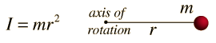
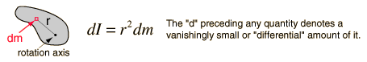
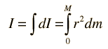

Moment of Inertia, General Form
Since the moment of inertia of an ordinary object involves a continuous distribution of mass at a continually varying distance from any rotation axis, the calculation of moments of inertia generally involves calculus, the discipline of mathematics which can handle such continuous variables. Since the moment of inertia of a point mass is defined by

then the moment of inertia contribution by an infinitesmal mass element dm has the same form. This kind of mass element is called a differential element of mass and its moment of inertia is given by

Note that the differential element of moment of inertia dI must always be defined with respect to a specific rotation axis. The sum over all these mass elements is called an integral over the mass.

Usually, the mass element dm will be expressed in terms of the geometry of the object, so that the integration can be carried out over the object as a whole (for example, over a long uniform rod).
Having called this a general form, it is probably appropriate to point out that it is a general form only for axes which may be called "principal axes", a term which includes all axes of symmetry of objects. The concept of moment of inertia for general objects about arbitrary axes is a much more complicated subject. The moment of inertia in such cases takes the form of a mathematical tensor quantity which requires nine components to completely define it.
|